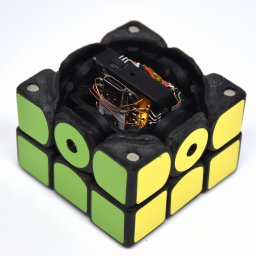
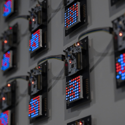
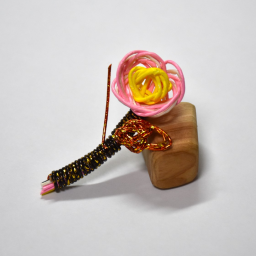
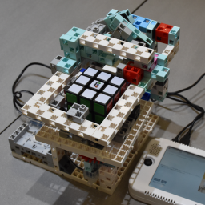
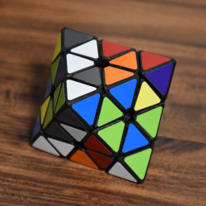
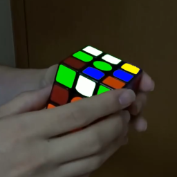
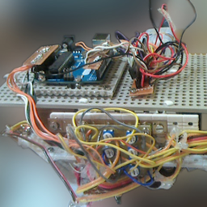

ホーム
作品
展示
研究
実績
コンタクト
Tweet
English
作品
Egaroucid (2021-現在)
世界最強のオセロAI

CuYu2 (2024)
立体パズル楽器

協働する技術 (2023)
STM32による並列オセロAI

寒桜 (2023)
水引で作った寒桜
過去・現在・未来 (2022)
オセロAIを通して考えるコンピュータと人間の未来
オセロの音 (2022)
オセロの棋譜の音楽化
Isevot (2022)
ロボット同士によるオセロ
コンピューターオセロ (2022)
1980年のオセロAIを換装

魔改造ルービックキューブソルバーロボ (2022)
商品化したロボットを改造
Egaroucen (2021-2022)
世界最弱のオセロAI
レトロオセロAI (2021-2022)
8bitマイコンで動かすオセロAI

Padurong (2021)
自作Face Turn Octahedron
CuYu (2021)
ルービックキューブ型楽器
QiaoKe (2021)
自作2x2x2キューブ
Studth (2021)
アーテックブロックで作るルービックキューブロボット
NyanTimer (2019-2021)
スピードキューブ専用タイマー
NyanClock (2020-2021)
自作クロックパズル
Solock (2020)
ルービッククロックを世界最速で解くロボット
Solvour (2020)
4x4x4キューブを解くロボット
Soltvvo (2020)
2x2x2キューブを世界最速で解くロボット

Crange (2019)
パズル映像の配色変更
MonoMotion (2017-2019)
ロボットのモーション作成支援システム
YamaX (2014-2019)
自作ヒューマノイドロボット
やまみじゅた1号 (2014)
RoboCup Junior レスキューA部門東東京大会に出場したロボット

ライントレーサー (2014)
Arduinoを使用した初のロボット